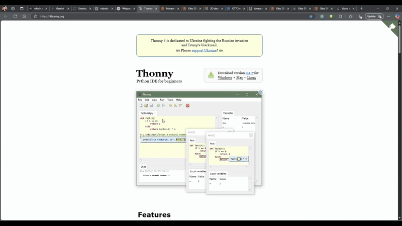

What You Need
- 🖥️ Computer (Windows / Mac / Linux)
- 🔌 Micro USB Cable
- 🔵 Raspberry Pi Pico or Pico W
- 🛠️ Install Thonny IDE
- 📂 Download MicroPython Firmware
Step-by-Step Path
📥 Step 1: Install Thonny IDE
Visit the official Thonny website and download the IDE for your operating system.
📥 Step 2: Download MicroPython Firmware
Get the latest MicroPython firmware for the Raspberry Pi Pico from the official MicroPython website.

🔌 Step 3: Flash Firmware onto Pico
- Hold BOOTSEL button while connecting the Pico to your computer.
- Drag and drop the .uf2 firmware file onto the Pico's storage drive.

🔗 Step 4: Connect Pico to Thonny
- Select "MicroPython (Raspberry Pi Pico)" in Thonny.
- Set the correct port for your Pico.

💡 Step 5: Upload First Program (Blink LED)
Write and upload a simple script to blink the onboard LED.

Mini Project: Blink LED
from machine import Pin
import time
led = Pin(25, Pin.OUT) # Pico W: Pin("LED")
while True:
led.toggle()
time.sleep(0.5)🖥️ Result: Your Pico's LED blinks every half second!
Quick Recap
- ✅ Thonny Installed
- ✅ MicroPython Installed
- ✅ Pico Connected
- ✅ First Program Uploaded